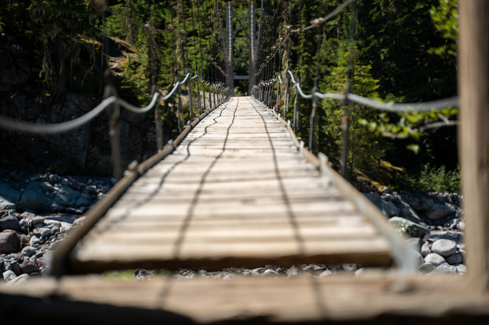

Suspension bridge for hikers
This suspension bridge allows hikers to cross over a river. This part of the river is too wide for a log bridge.
A tower on both sides of the river holds up strong steel cables, and hikers walk on a bridge surface that is hanging from those cables. It shakes and bounces very excitingly when you walk on it!
Location: Carbon River Trail/Wonderland Trail
Visited: August 15, 2022 at 1:37 PM